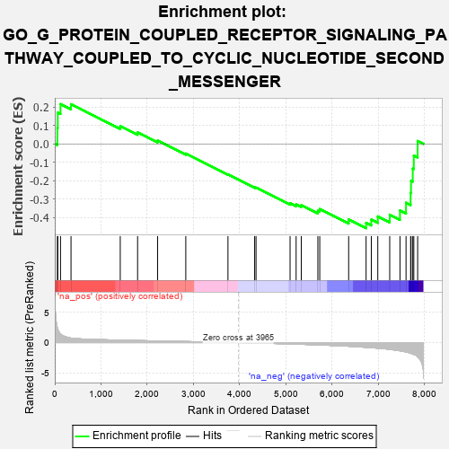
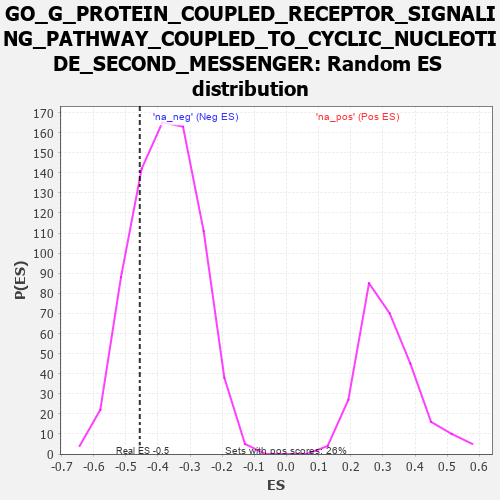

| | | Dataset | 7d |
| Phenotype | NoPhenotypeAvailable |
| Upregulated in class | na_neg |
| GeneSet | GO_G_PROTEIN_COUPLED_RECEPTOR_SIGNALING_PATHWAY_COUPLED_TO_CYCLIC_NUCLEOTIDE_SECOND_MESSENGER |
| Enrichment Score (ES) | -0.45650992 |
| Normalized Enrichment Score (NES) | -1.214918 |
| Nominal p-value | 0.20596206 |
| FDR q-value | 0.60874295 |
| FWER p-Value | 1.0 |
Table: GSEA Results Summary

Fig 1: Enrichment plot: GO_G_PROTEIN_COUPLED_RECEPTOR_SIGNALING_PATHWAY_COUPLED_TO_CYCLIC_NUCLEOTIDE_SECOND_MESSENGER
Profile of the Running ES Score & Positions of GeneSet Members on the Rank Ordered List
| PROBE | GENE SYMBOL | GENE_TITLE | RANK IN GENE LIST | RANK METRIC SCORE | RUNNING ES | CORE ENRICHMENT | | 1 | MC4R | | | 57 | 2.491 | 0.0862 | No |
| 2 | PTH2R | | | 65 | 2.249 | 0.1696 | No |
| 3 | ADCY8 | | | 124 | 1.418 | 0.2154 | No |
| 4 | GSK3A | | | 351 | 0.745 | 0.2149 | No |
| 5 | P2RY1 | | | 1416 | 0.407 | 0.0962 | No |
| 6 | GRM8 | | | 1791 | 0.339 | 0.0618 | No |
| 7 | GRIK3 | | | 2224 | 0.272 | 0.0176 | No |
| 8 | RIC8A | | | 2833 | 0.179 | -0.0522 | No |
| 9 | HTR1B | | | 3745 | 0.035 | -0.1656 | No |
| 10 | TSHR | | | 4322 | -0.063 | -0.2357 | No |
| 11 | ADRB2 | | | 4352 | -0.068 | -0.2368 | No |
| 12 | DRD2 | | | 5088 | -0.221 | -0.3210 | No |
| 13 | GPR4 | | | 5219 | -0.250 | -0.3280 | No |
| 14 | NPY2R | | | 5331 | -0.281 | -0.3315 | No |
| 15 | MC5R | | | 5689 | -0.371 | -0.3625 | No |
| 16 | CALCR | | | 5730 | -0.386 | -0.3531 | No |
| 17 | GALR2 | | | 6355 | -0.599 | -0.4092 | No |
| 18 | NPY1R | | | 6732 | -0.776 | -0.4274 | Yes |
| 19 | PTH1R | | | 6845 | -0.839 | -0.4101 | Yes |
| 20 | PDE2A | | | 6985 | -0.927 | -0.3929 | Yes |
| 21 | ABCA1 | | | 7243 | -1.113 | -0.3835 | Yes |
| 22 | NPY | | | 7465 | -1.356 | -0.3605 | Yes |
| 23 | GRM2 | | | 7596 | -1.547 | -0.3189 | Yes |
| 24 | ADCY1 | | | 7695 | -1.752 | -0.2656 | Yes |
| 25 | ADCY9 | | | 7704 | -1.783 | -0.1998 | Yes |
| 26 | GRM3 | | | 7741 | -1.880 | -0.1338 | Yes |
| 27 | PDE4D | | | 7764 | -1.944 | -0.0638 | Yes |
| 28 | GRM4 | | | 7847 | -2.393 | 0.0156 | Yes |
Table: GSEA details [plain text format]

Fig 2: GO_G_PROTEIN_COUPLED_RECEPTOR_SIGNALING_PATHWAY_COUPLED_TO_CYCLIC_NUCLEOTIDE_SECOND_MESSENGER: Random ES distribution
Gene set null distribution of ES for GO_G_PROTEIN_COUPLED_RECEPTOR_SIGNALING_PATHWAY_COUPLED_TO_CYCLIC_NUCLEOTIDE_SECOND_MESSENGER